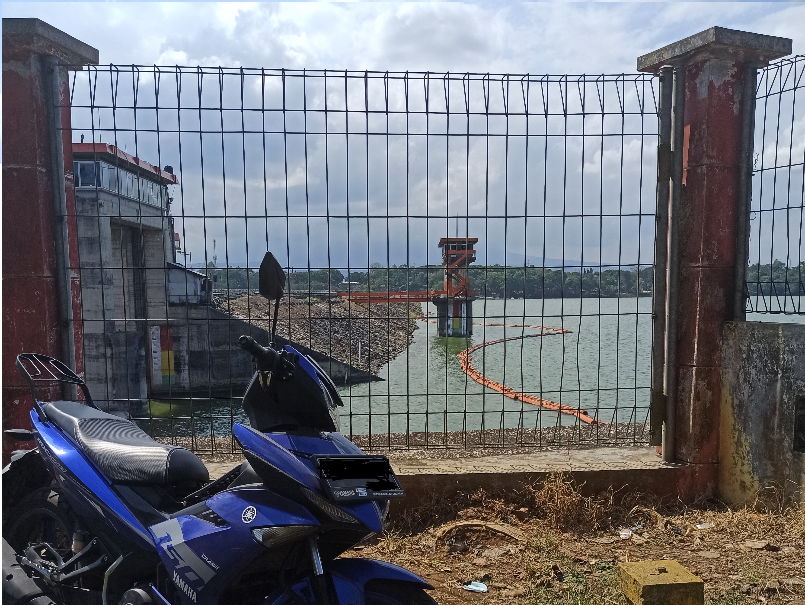
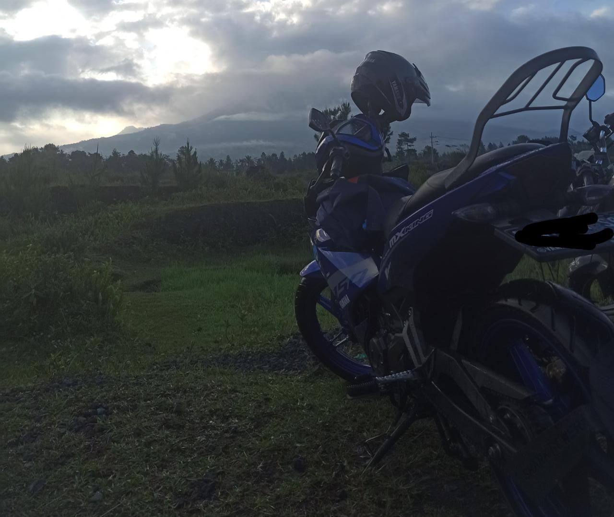

Overview

Welcome to my website, where I'll share with you why my motorcycle
holds a special place in my heart as my ultimate travel companion.
Whenever I venture into uncharted territories, my bike is always by
my side, ready to take on the open road and embark on new
adventures. Its reliability and versatility make it the perfect
partner for exploring the unknown, whether it's cruising through
winding country roads or navigating bustling city streets. Join me
as I delve into the reasons why my motorcycle isn't just a mode of
transportation, but a trusted friend that adds excitement and
freedom to my journeys.
Hobby

From its humble beginnings as a mere mode of transportation, my
motorcycle journey has evolved into a cherished hobby of exploring
uncharted territories. What once served as a means to get from point
A to point B has now transformed into a trusted companion,
accompanying me on exhilarating adventures and helping me discover
new areas. Beyond its practical function, my bike has become a dear
friend, offering solace and liberation as I release the burdens of
my thoughts and desires while cruising along the open road.
Journey
The following is an overview of the journey I have taken so far.
Going to Bromo!

The journey starts in the early hours of the morning and arrives
at the foot of Mount Bromo in the morning. Seeing the beauty of
Mount Bromo and the foot of Mount Semeru really melted my heart.
Karangkates Reservoir

To be honest, this is a trip that I did unplanned and just walked
straight away without a destination. However, I finally found the
final destination of my trip, namely the Karangkates reservoir.
Sarkawi

Sarkawi tourism is located in Sumberurip village, Pronojiwo
District, Lumajang Regency. Access to Sarkawi tourism is quite
extreme. Tourists are required to pass through rocky roads.
However, the struggle to get to this tourist spot will be worth
the beautiful views that tourists can enjoy. Upon arrival,
tourists will be treated to views of green rice fields and
beautiful views of Mount Semeru.